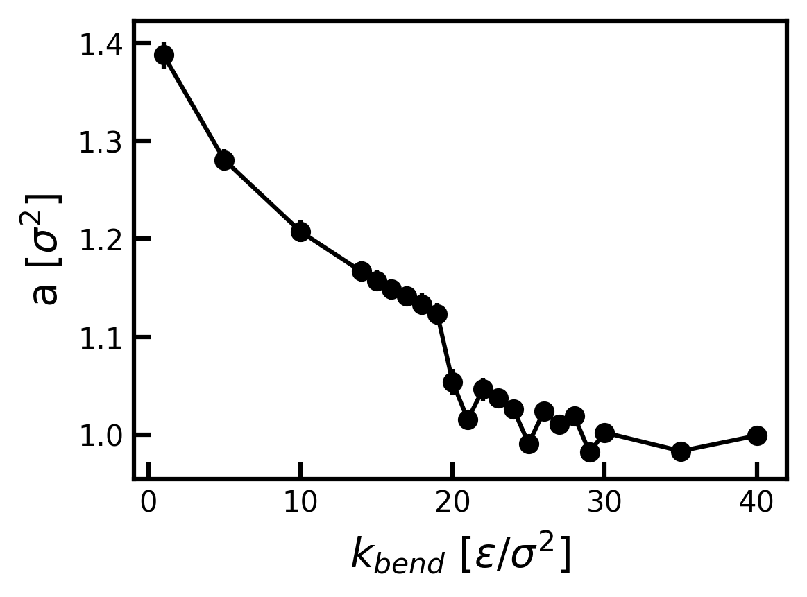
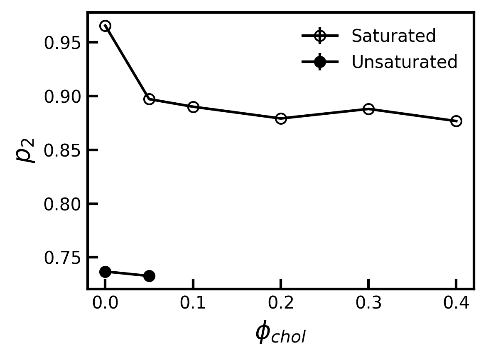

Last Updated: 3/8/2026
Pre-wet Phase Introduction
The pre-wet phase appears in biological systems when there is not sufficient enthalpy to wet the surface (the polymers don't want to be near each other) but they are still attracted to the surface. This creates a molecularly thin layer of polymer on the surface, which can give rise to interesting physics.
Cooke Deserno - Kremer Grest Model
Simulations are performed with a hybrid Cooke-Deserno and Kremer-Grest type model. The Cooke-Deserno lipid model is an implicit solvent lipid model recently updated to prevent flip-flop [Foley & Deserno (2020)] and also to simulate ternary mixtures of lipids [Varma, Kuhri-Makdisi, Deserno]. The Kremer-Grest model is an implicit solvent polymer chain model which uses similar repulsive leonard jones interactions and FENE type bonds to capture the essential physics of polymer chains [Kremer & Grest (1990)]. To study the pre-wet phase, we are effectively interested in the interface between a 2D membrane and a 3D polymer solution. The main advantage to implicit solvent, off-lattice molecular dynamics simulation (as opposed to MC simulations or more fine-grained models) is that curvature and lipid asymmetry, which involve a treatment of the membrane in 3-dimensions, is explicitly modeled without a tremendous increase in computational complexity.
Kremer Grest Model Validation
Cooke Deserno Model Validation
Area per Lipid and Gel Phase of CD Lipid
As the good computational scientists that we are, we validate the implementation of the CD model against published data. The first set of validation matches that of Fig. 3a in [Varma, Kuhri-Makdisi, Deserno]. We simulate 600 lipids (300 per leaflet) for 1,000,000 timesteps at varying \(k_{bend}\) values and constant kT (1.4 \(\epsilon\)), constant \(w_c\) (1.6 \(\sigma\)) and all other standard parameters. The area per lipid is measured from the box area over the last 100 frames and averaged.

Both the limiting cases as well as the point of the gel phase transition (where the area per lipid drops sharply) are captured by our implementation of the CD model.
Binary Systems with Cholesterol
Next, we test the implementation of the binary unsaturated-lipid cholesterol system and the saturated lipid - cholesterol system.

The order parameter \(p_2\) is calculated as the average of the dot product of the membrane normal [001] and the vector which defines the lipid (head to tail). We calculate the order parameter for the saturated lipids to be .96 and upon the introduction of cholesterol the order parameter drops to .89. The paper we are referencing shows an initial order parameter for saturated lipids to be .92 and it drops to .875 upon the addition of cholesterol. Qualitatively, this trend is correct. It does slightly miss the values (despite the supposed same parameters). One explanation could be the use of a different barostat, but this should not cause a difference in the equilibrium properties. The thermostat should be the same. The simulation seems to be thoroughly equillibrated. , but these simulations are substantially shorter than those performed in the paper. These values are quite close and correct in trend, which leads me to think that this could be a difference in either the choice of the head-tail director or the choice of the \(\hat z\) axis.
Simulation Scheme
The implementation of this model is in HOOMD-blue. The non-bonded cosine squared potential used to model the interaction between hydrophobic lipids was implemented by Rusen Argun utilizing the HOOMD add-on package AZ-plugins. Simulations were conducted on the GPU. The runtime of a 2,000 lipid system for 100,000 $\tau$ is approximately 2 hr on a desktop PC with RTX 4090.
BLANK